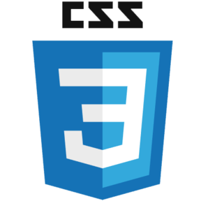
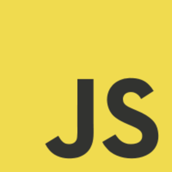
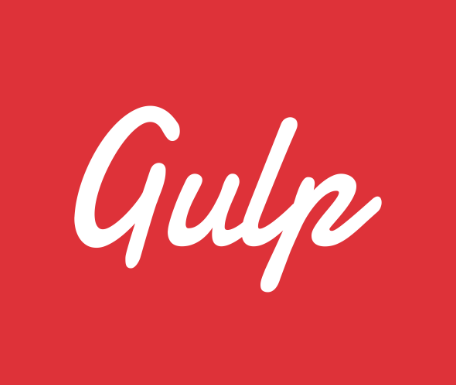
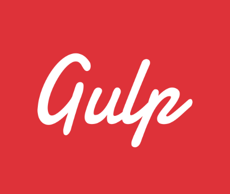
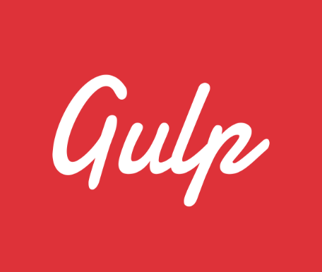
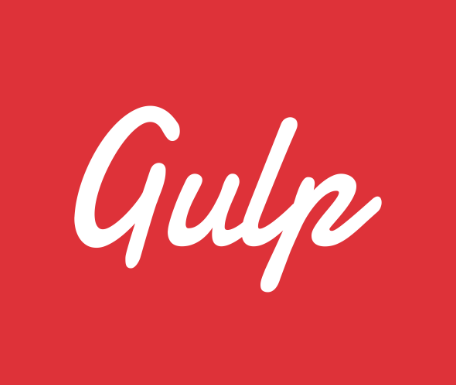

Обо мне
Веб-разработчик с опытом проектирования и разработки пользовательских интерфейсов, тестирования и отладки.Создаю адаптивные, кроссбраузерные сайты, лендинги и приложения.
Frontend
   
 

 Backend

Веб-разработчик с опытом проектирования и разработки пользовательских интерфейсов, тестирования и отладки.Создаю адаптивные, кроссбраузерные сайты, лендинги и приложения.
 Англо-английский словарь с антонимами, синонимами и примерами использования.
Стек: React.ts ⚛ Mobx ⚛ Css
Сайт-агрегатор для поиска научных конференций, стипендий и стажировок.
Стек: React ⚛ Redux ⚛ Styled Components ⚛ Scss
Поиск пользователей на платформе GitHub по логину.
Стек: Next ⚛ TS ⚛ Chakra UI ⚛ Css
Результат кроссбраузерной верстки лэндинга для десктопной версии экрана, широких экранов и для мобильной версии не менее 375px.
Стек: Gulp ⚛ HTML ⚛ Scss ⚛ JS
Инструмент управления Agile-проектами, который помогает наглядно представить задачи, ограничить объем незавершенной работы и добиться максимальной эффективности.
Стек: React ⚛ Redux tookit ⚛ Css
Поиск книг по запросу и отображение списка книг с информацией.
Стек: Google api ⚛ React.ts ⚛ Mantine
Информация о режиссере и дате выпуска всех серий фильма Звездные войны.
Стек: GrapghQL ⚛ Apollo ⚛ React.js ⚛ Css
Данный проект является реализацией интерфейса для поиска и сортировки пользователей по количеству их репозиториев на платформе GitHub. Проект включает в себя функции поиска, сортировки, пагинации и отображения подробностей о выбранном пользователе.
Стек: React ⚛ Redux tookit ⚛ Chakra UI
Тренажер для запоминания терминологии и иностранных слов. Включает в себя функции добавления слов и определений, редактирования и удаления слов,добавления в изученные и возврат обрано в словарь,шторки, для самопроверки,флэшкарты для проверки с добавлением в изученные.
Стек: React ⚛ Redux tookit ⚛ Scss
Известная компания, занимающаяся прокатом велосипедов в крупных городах России, испытывает проблемы с частой кражей их имущества (велосипедов). Как возможное решение проблемы, компания хочет вести учёт этих случаев и отслеживать прогресс. Клиентская часть предназначена как для сотрудников компании, так и для обычных пользователей.
Стек: React ⚛ Redux tookit ⚛ Css
Можно кормить, гладить, ругать, играть, гулять с любимцем, убирать за ним, следить за уровнем энергии, сытости, счастья и потребностью в туалете.
Стек: JS ⚛ Css ⚛ Vite
Верстка лендинга для десктопной версии экрана, широких экранов и для мобильной версии не менее 375px.
Стек: React ⚛ Scss
Генератор фактов о кошках, который выдает рандомные факты о кошках при каждом обновлении страницы.
Стек: React ⚛ Redux Query ⚛ Css